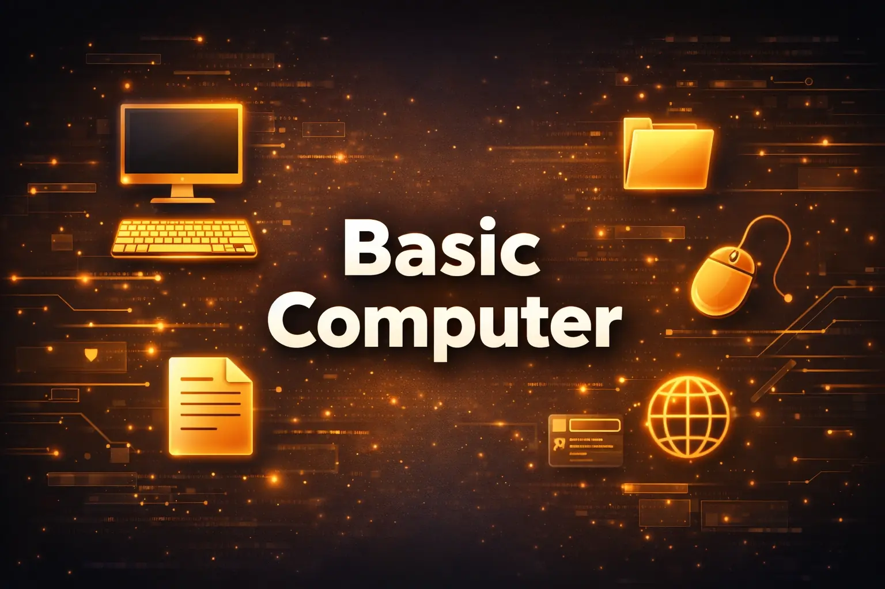

Basic Computer Course in Gurugram
Start your digital journey with the Basic Computer Course at SSSAM Academy, a trusted computer institute in Gurugram located in Old DLF, Sector 14, Haryana. This beginner-friendly training program helps students, job seekers, and working professionals learn essential computer skills such as operating systems, MS Office, internet usage, and digital productivity required in modern workplaces.
📍 SSSAM Academy Center: M24 Ground floor, Old DLF, Sector 14, Gurugram

Basic Computer Training in Gurugram
SSSAM Academy is a trusted computer institute in Gurugram offering practical Basic Computer training at Old DLF, Sector 14.
Our Basic Computer Course in Gurugram is designed to guide learners from basic concepts to advanced practical implementation. This training program covers core principles, real-world application workflows, and capstone project assignments.
Basic Computer Course Syllabus
Our comprehensive curriculum is split into logical modules to guide you from fundamentals to advanced skills.
- Main Topic 1: Computer Fundamentals & Hardware — CPU, RAM, Storage (SSD/HDD), Input/Output Devices, System Settings
- Main Topic 2: Windows OS & Typing Skills — File Explorer, Task Manager, Control Panel, Touch Typing Speed Drills & Shortcuts
- Practical Capstone: Setting up & Customizing a Business Workstation in Windows 11
- Main Topic 1: Document & Presentation Creation — MS Word Letterhead Formatting, Tables, Headers/Footers, PowerPoint Slide Design
- Main Topic 2: Excel Basics & Data Entry — Cell Formatting, SUM, AVERAGE, COUNT, AutoFilter, Data Sorting & Pie Charts
- Practical Capstone: Creating a Professional Business Proposal Document & Financial Expense Sheet
- Main Topic 1: Web Navigation & Email Etiquette — Google Chrome, Search Operators, Gmail Professional Messaging, Attachments
- Main Topic 2: Online Security & Cloud Drive — Google Drive Cloud Storage, Phishing Awareness, Two-Factor Authentication
- Practical Capstone: Managing Cloud Files & Drafting Executive Email Campaigns
- Sorting and filtering data
- Creating charts and graphs
- Practical office data management
- Printing and sharing spreadsheets
- Introduction to the internet and web browsers
- Searching information online effectively
- Creating and managing email accounts
- Sending attachments and professional emails
- Online safety and cybersecurity basics
- Using cloud storage and online tools
- Introduction to digital services and online forms
- Practical tasks for everyday computer use
Tools & Technologies Covered
Master industry-standard tools and libraries used by top professional teams globally.
Windows OS
Navigate file directories, manage folders, and understand system basics.
MS Office Suite
Draft documents in Word, calculate in Excel, and present in PowerPoint.
Internet & Email
Browse web search engines safely, send corporate emails, and understand security.
Typing & Hardware
Improve keyboard typing speed, shortcuts, and connect computer hardware.
Industry Projects & Case Studies
Build a job-ready portfolio by working on real-world projects and application designs.
Real-World Datasets
Gain experience handling noisy, real-world data files, cleaning records, and dealing with missing data values.
- Performance tracking with multi-variable metrics
- User pattern classification with behavioral records
- Anomaly detection models using pattern classifiers
Business Use Cases
Solve complex business challenges and learn to evaluate and present model outcomes to stakeholders.
- Workflow optimization models based on preferences
- Performance forecasting using statistical modeling
- User market segmentation using clustering
Portfolio & Git Profile
Publish clean code, project documentation, and summaries to demonstrate your coding skills to recruiters.
- Structured repositories with clear explanations
- GitHub repositories containing code and professional README files
- Interview-ready explanations of metrics and trade-offs
Course Details & Batches
Flexible schedules and batch options tailored for both students and working professionals.
Duration
The structured training program runs for 3–4 months to cover all modules in detail.
Learning Modes
Attend interactive offline classes at our center or join online live classes from anywhere.
Location
Our Gurugram center is located in Old DLF, Sector 14, offering excellent local connectivity.
Flexible Batches
Small batch sizes with options for weekday, evening, and weekend batches.
Placement & Career Support
Resume optimization, technical interview guides, and referrals to help you transition into core roles.
Resume & LinkedIn Builder
Optimize your professional profile and resume to highlight project portfolios.
Technical Interview Prep
Prepare with structured guides covering algorithms, core concepts, and programming questions.
Expert Mock Interviews
Gain confidence and receive detailed feedback through 1-on-1 mock interviews with industry practitioners.
Corporate Referrals
Access SSSAM Academy's corporate relationships for direct referrals and placement drives.
What Our Students Say
Vikas Kumar
Amazing learning experience at SSSAM Academy Gurugram. The instructors are extremely helpful and guide you individually through all practical assignments.
Neha Yadav
Best computer training classes in Gurgaon. They cover the syllabus with actual code exercises instead of theoretical slides. Very satisfied with my certification program.
Sandeep Singh
Practical learning standard is top notch. The laboratory facilities and interactive live doubt support made it very easy to transition into coding.
Preeti Sharma
SSSAM Academy Old DLF is highly structured. From basic details to project work, everything is extremely professional. The placement support is very responsive.
Manish Malhotra
Great curriculum and flexible batch timings. The trainers are patient and ensure every student gets their doubts resolved. Best coding institute.
Ananya Roy
Excellent class setup, good computers and individual mock tests helped me boost my confidence. I got placed within 2 weeks of finishing my projects.
Studied at SSSAM Academy? Share your experience and help other students in Gurugram find the right IT course.
Frequently Asked Questions (FAQs) – Basic Computer Course in Gurugram
What is the duration of the Basic Computer Course at SSSAM Academy?
The Basic Computer Course at SSSAM Academy typically runs for 6 to 8 weeks depending on the batch schedule. Students learn computer fundamentals, Microsoft Word, Excel, PowerPoint, internet usage, and practical office computer skills through hands-on training.
Where is SSSAM Academy located in Gurugram?
SSSAM Academy is located in Old DLF Sector 14, Gurugram, Haryana. Our computer institute is easily accessible from nearby areas such as DLF Phase 1, DLF Phase 2, and MG Road. We also provide online live classes for students who prefer learning from home.
What are the fees for the Basic Computer Course in Gurugram?
The Basic Computer Course is offered at an affordable fee structure so students can easily learn essential computer skills. EMI options may also be available. For exact fees and batch availability, please contact SSSAM Academy directly or visit our institute in Old DLF Sector 14 Gurugram.
Do I need prior computer knowledge to join this course?
No prior computer knowledge is required. This course is designed for complete beginners who want to learn basic computer operations, Microsoft Office tools, and internet usage step by step.
Will I receive a certificate after completing the Basic Computer course?
Yes. After successful completion of the training, students receive a Basic Computer Course Completion Certificate from SSSAM Academy. This certificate helps demonstrate your computer skills for job applications and office roles.
Ready to Learn Basic Computer in Gurugram?
Join students who are building careers in IT and technology at SSSAM Academy, a trusted computer institute in Gurugram located in Old DLF Sector 14. Start your learning journey with practical training in Basic Computer guided by experienced mentors. Limited seats are available for the upcoming batch—enroll now and begin your training within the next 48 hours.
Special Offer: Get 15% discount on course fees and a free career guidance session when you enroll this week.